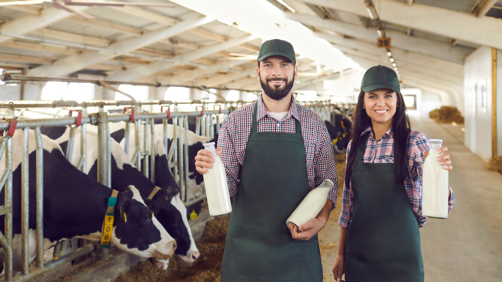
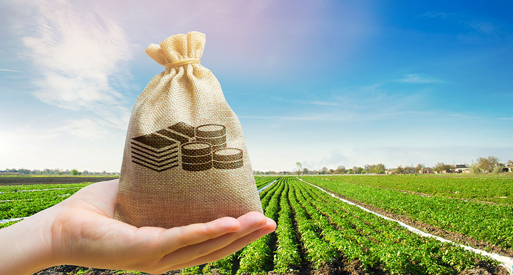

A agropecuária oferece diversas oportunidades de carreira e negócios. Nesta página, exploraremos algumas delas.
Alguns exemplos de produçoẽs da pecuaria:
Oportunidades
Produção de leite

Gestao de propriedade rural

Confira algumas oportunidades de atuação no campo:
Agricultura irrigada. Agroindústria. Apicultura. Produção de cachaça artesanal.
Produção de alimentos orgânicos
Desenvolvimento de tecnologias agrícolas
Gestão de propriedades rurais
Consultoria agropecuária
Comércio de produtos agropecuários
Quais são os pontos positivos da agropecuária?
A atividade agropecuária é muito importante, pois faz parte da economia primária. É ela quem fornece alimentos e matérias-primas para a produção de outros itens. As condições de clima e de solo brasileiro são excelentes para esse setor, que participa de grande fatia do PIB nacional.
Quais as oportunidades na logística do agronegócio?
Novas formas de cultivo, exportação da produção e diversificação da atuação do produtor rural, são apenas algumas das oportunidades para a gestão logística no agronegócio.
Qual é a importância da agropecuária no mundo de hoje?
A atividade agropecuária exerce um papel central na economia mundial, uma vez que é dela que advêm os alimentos e boa parte das matérias-primas utilizadas na indústria.
A gestão das propriedades rurais se caracteriza por um conjunto de atividades para o melhor planejamento, organização e controle das atividades do ponto de vista financeiro, auxiliando para a tomada de decisão, de modo que o produtor possa gerenciar melhor as atividades, maximizar a produção e minimizar os custos, na busca de melhores resultados financeiros. A partir de uma rotina de boa gestão, o produtor se organiza e planeja suas ações definindo as atividades da propriedade de acordo com os seus recursos, minimizando as falhas e aumentando a qualidade de seus investimentos.
A agricultura orgânica é um modelo de produção caracterizado por não utilizar fertilizantes sintéticos, agrotóxicos, sementes modificadas, reguladores de crescimento animal e intensa mecanização das atividades, visando a reduzir os impactos ambientais, além de cultivar produtos alimentícios mais saudáveis.